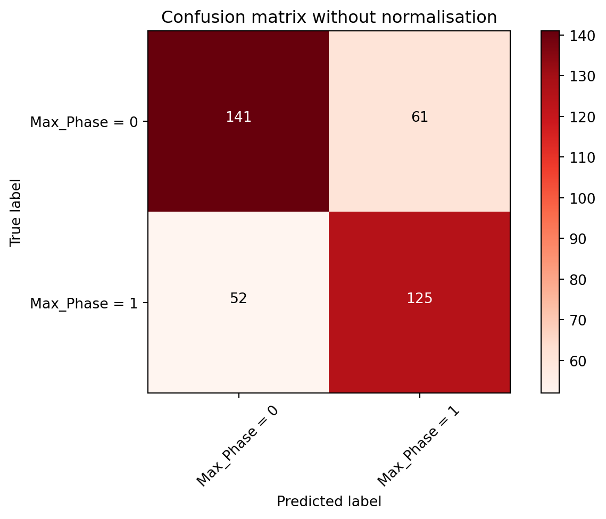

import pandas as pdMachine learning in drug discovery - series 1.3
The ML series has been re-numbered to reflect all 3 posts relevant to small molecules in ChEMBL database to avoid confusions.
This post has been updated on 2/9/2023 with a section on “Data source” to improve the completeness and reproducibility of this post.
Review of ML series 1.2 & introduction of series 1.3
Without making this final post for logistic regression ML series for small molecules in ChEMBL database too long, I’ll quickly explain what happened in the ML series 1.1 and 1.2. Basically, I’ve trialled a logistic regression model on a small set of ChEMBL database-extracted small molecule data. The whole purpose was for me to go through the ML series flowchart that I’ve compiled in ML series 1.2. Currently, this post was ML series 1.3 focusing on re-training the model by using the newly-found parameters to optimise the original model after running the cross-validation and hyper-parameter tuning in ML series 1.2.
Data source
The dataframe used below was based on a .csv file extracted and saved via a direct .csv file download from the homepage of ChEMBL website (via selecting the option of “Distinct compounds” containing 2,331,700 compounds at the time for ChEMBL version 31). Data pre-processing and wrangling were done on the same dataframe containing these 2,331,700 compounds (rows of data) via Polars dataframe library. The details of data extraction and wrangling were shown in ML series 1.1.
Import dataframe from ML series 1.1
Using Pandas again to import the same set of data used in ML series 1.1 and 1.2.
Importing and reading the same df_ml dataset again.
df_ml = pd.read_csv("df_ml.csv")
df_ml.head()| Max_Phase | #RO5 Violations | QED Weighted | CX LogP | CX LogD | Heavy Atoms | |
|---|---|---|---|---|---|---|
| 0 | 0 | 0 | 0.91 | 2.05 | 0.62 | 21 |
| 1 | 0 | 2 | 0.16 | 1.51 | -0.41 | 48 |
| 2 | 0 | 2 | 0.20 | 5.05 | 3.27 | 46 |
| 3 | 0 | 0 | 0.53 | 3.21 | 3.21 | 24 |
| 4 | 0 | 1 | 0.14 | 2.80 | 2.80 | 37 |
# Check rows and columns of the df_ml dataframe if needed
#df_ml.shapeImport libraries for machine learning
# Install scikit-learn - an open-source ML library
# Uncomment the line below if needing to install this library
#!pip install -U scikit-learn# Import scikit-learn
import sklearn
# Check version of scikit-learn
print(sklearn.__version__)1.5.0Other libraries needed were imported as below.
# To use NumPy arrays to prepare X & y variables
import numpy as np
# To normalise dataset prior to running ML
from sklearn import preprocessing
# To split dataset into training & testing sets
from sklearn.model_selection import train_test_split
# For data visualisations
# Uncomment line below if requiring to install matplotlib
#!pip install matplotlib
import matplotlib.pyplot as pltLogistic regression
Here I’ve defined the X and y variables again and kept them the same as the ones used in ML series 1.1 and 1.2.
Defining X and y variables
# Define X variables from df_ml dataset (by selecting certain features)
X = np.asarray(df_ml[["#RO5 Violations",
"QED Weighted",
"CX LogP",
"CX LogD",
"Heavy Atoms"]]
)
X[0:5]array([[ 0. , 0.91, 2.05, 0.62, 21. ],
[ 2. , 0.16, 1.51, -0.41, 48. ],
[ 2. , 0.2 , 5.05, 3.27, 46. ],
[ 0. , 0.53, 3.21, 3.21, 24. ],
[ 1. , 0.14, 2.8 , 2.8 , 37. ]])# Define y variable
y = np.asarray(df_ml["Max_Phase"])
y[0:5]array([0, 0, 0, 0, 0])Training and testing sets
# Split dataset into training & testing sets
X_train, X_test, y_train, y_test = train_test_split(X, y, test_size = 0.2, random_state = 250)
print('Training set:', X_train.shape, y_train.shape)
print('Testing set:', X_test.shape, y_test.shape)Training set: (1515, 5) (1515,)
Testing set: (379, 5) (379,)Preprocessing data
# Normalise & clean the dataset
# Fit on the training set - not on testing set as this might lead to data leakage
# Transform on the testing set
X = preprocessing.StandardScaler().fit(X_train).transform(X_test)
X[0:5]array([[-0.61846489, -0.79518088, 0.57523481, 0.76170581, 0.47638078],
[-0.61846489, -1.24006401, 1.27389185, 1.25867492, 0.37925834],
[-0.61846489, 0.4949802 , -0.18352175, 0.12634023, -1.27182321],
[-0.61846489, -0.79518088, 0.03433905, 0.28360894, -0.68908855],
[-0.61846489, -0.48376269, 0.61655324, 0.79630492, -0.20347633]])Fitting LR classifier on training set
One thing that would be changed this time was that Cs value was changed to 50 (from 10 previously), while using cv = 5, which was already set by default (so this wasn’t shown explicitly in the code below). This was because a Cs of 50 and cv of 5, along with a penalty of l2 and solver in lbfgs were found to produce the highest accuracy score last time when we were tuning the hyper-parameters and doing the cross-validations.
# Import logistic regression CV estimator
from sklearn.linear_model import LogisticRegressionCV
# Change to LogisticRegressionCV() - LR with built-in cross validation
# Create an instance of logistic regression CV classifier and fit the data
# Add in tuned parameters from ML series 1.2
LogR = LogisticRegressionCV(Cs = 50).fit(X_train, y_train)
LogRLogisticRegressionCV(Cs=50)In a Jupyter environment, please rerun this cell to show the HTML representation or trust the notebook.
On GitHub, the HTML representation is unable to render, please try loading this page with nbviewer.org.
LogisticRegressionCV(Cs=50)
Applying LR classifier on testing set for prediction
y_mp = LogR.predict(X_test)
y_mparray([0, 0, 1, 0, 0, 1, 0, 0, 1, 0, 1, 1, 0, 1, 1, 0, 0, 0, 0, 0, 0, 0,
0, 0, 1, 0, 0, 0, 1, 0, 1, 1, 0, 1, 1, 1, 0, 0, 1, 0, 0, 1, 0, 0,
1, 1, 1, 0, 1, 0, 0, 0, 1, 1, 1, 1, 1, 1, 1, 0, 0, 0, 0, 0, 0, 1,
1, 0, 1, 1, 0, 1, 1, 0, 1, 0, 0, 1, 1, 0, 1, 1, 1, 0, 1, 0, 1, 1,
0, 0, 0, 0, 1, 0, 1, 0, 0, 0, 0, 0, 0, 1, 1, 1, 0, 0, 0, 1, 1, 1,
1, 0, 1, 0, 0, 0, 1, 0, 0, 1, 1, 1, 0, 0, 0, 0, 1, 1, 1, 1, 0, 0,
1, 0, 1, 1, 0, 0, 0, 0, 0, 1, 0, 1, 0, 1, 0, 1, 0, 0, 1, 0, 0, 1,
0, 1, 1, 1, 0, 0, 0, 1, 0, 1, 0, 1, 0, 0, 1, 0, 1, 0, 0, 0, 0, 0,
0, 1, 1, 0, 0, 0, 1, 1, 1, 0, 1, 1, 0, 0, 1, 0, 1, 1, 1, 0, 0, 0,
0, 0, 1, 1, 1, 0, 0, 1, 0, 0, 1, 0, 1, 1, 0, 0, 1, 1, 0, 0, 1, 1,
0, 1, 0, 1, 0, 0, 1, 0, 0, 1, 1, 0, 0, 0, 1, 0, 0, 1, 0, 0, 0, 1,
0, 1, 1, 1, 1, 1, 1, 1, 0, 0, 1, 1, 0, 0, 0, 1, 0, 0, 1, 0, 0, 0,
1, 0, 0, 0, 1, 1, 0, 0, 0, 1, 1, 1, 1, 0, 1, 0, 1, 1, 1, 0, 1, 0,
0, 1, 1, 0, 0, 1, 0, 0, 1, 0, 1, 0, 1, 0, 0, 1, 1, 0, 0, 1, 0, 1,
0, 1, 1, 0, 1, 0, 1, 0, 1, 1, 0, 1, 0, 1, 0, 0, 1, 0, 1, 0, 1, 0,
1, 0, 1, 1, 1, 1, 0, 1, 0, 0, 0, 1, 1, 1, 1, 1, 0, 0, 0, 0, 1, 0,
1, 0, 0, 1, 0, 0, 1, 0, 0, 1, 1, 0, 1, 1, 1, 1, 0, 0, 0, 0, 0, 1,
0, 0, 1, 0, 0])Converting predicted values into a dataframe
# Predicted values were based on log odds
# Use describe() method to get characteristics of the distribution
pred = pd.DataFrame(LogR.predict_log_proba(X))
pred.describe()| 0 | 1 | |
|---|---|---|
| count | 379.000000 | 379.000000 |
| mean | -1.090515 | -0.425639 |
| std | 0.230315 | 0.095267 |
| min | -2.493885 | -0.699844 |
| 25% | -1.172820 | -0.479252 |
| 50% | -1.060136 | -0.425273 |
| 75% | -0.965603 | -0.370329 |
| max | -0.686495 | -0.086199 |
To get predicted probabilities, use predict_proba() method in scikit-learn, then the predicted probabilities were converted into a dataframe.
y_mp_proba = LogR.predict_proba(X_test)
# Use describe() to show distributions
y_mp_prob = pd.DataFrame(y_mp_proba)
y_mp_prob.describe()| 0 | 1 | |
|---|---|---|
| count | 379.000000 | 379.000000 |
| mean | 0.482617 | 0.517383 |
| std | 0.170380 | 0.170380 |
| min | 0.010464 | 0.146983 |
| 25% | 0.373949 | 0.390477 |
| 50% | 0.509166 | 0.490834 |
| 75% | 0.609523 | 0.626051 |
| max | 0.853017 | 0.989536 |
Evaluation of the model after using optimised parameters
Accuracy scores
from sklearn.metrics import accuracy_score
accuracy_score(y_mp, y_test)0.7071240105540897There were about 0.26% increase in accuracy score when using the LogR model with the tuned parameters from ML series 1.2, when compared with the LogR model made initially in ML series 1.1, which had an accuracy score of 0.6992084432717678.
Confusion matrix
Again, I’ve used the same confusion matrix function code again to show the new confusion matrix this time.
# Import confusion matrix from scikit-learn
from sklearn.metrics import confusion_matrix
# Import itertools - functions to create iterators for efficient looping
import itertools
# Function to print and plot confusion matrix
def plot_confusion_matrix(# Sets a cm object (cm = confusion matrix)
cm,
# Sets classes of '1s' (Successes) & '0s' (Non-successes) for the cm
classes,
# If setting normalize = true, reports in ratios instead of counts
normalize,
title = 'Confusion matrix',
# Choose colour of the cm (using colourmap recognised by matplotlib)
cmap = plt.cm.Reds):
if normalize:
cm = cm.astype('float') / cm.sum(axis = 1)[:, np.newaxis]
print("Normalized confusion matrix")
else:
print('Confusion matrix, without normalization')
print(cm)
# Plot the confusion matrix
plt.imshow(cm, interpolation = 'nearest', cmap = cmap)
plt.title(title)
plt.colorbar()
tick_marks = np.arange(len(classes))
plt.xticks(tick_marks, classes, rotation = 45)
plt.yticks(tick_marks, classes)
# Floats to be round up to two decimal places if using normalize = True
# or else use integers
fmt = '.2f' if normalize else 'd'
# Sets threshold of 0.5
thresh = cm.max() / 2.
# Iterate through the results and differentiate between two text colours
# by using the threshold as a cut-off
for i, j in itertools.product(range(cm.shape[0]), range(cm.shape[1])):
plt.text(j, i, format(cm[i, j], fmt),
horizontalalignment = "center",
color = "white" if cm[i, j] > thresh else "black")
plt.tight_layout()
plt.ylabel('True label')
plt.xlabel('Predicted label')# Compute confusion matrix
matrix = confusion_matrix(y_test, y_mp, labels = [0,1])
np.set_printoptions(precision = 2)
# Plot confusion matrix without normalisation
plt.figure()
plot_confusion_matrix(matrix,
# Define classes of outcomes
classes = ['Max_Phase = 0','Max_Phase = 1'],
# Set normalize = True if wanting ratios instead
normalize = False,
title = "Confusion matrix without normalisation"
)Confusion matrix, without normalization
[[148 54]
[ 57 120]]
Classification report
from sklearn.metrics import classification_report
print(classification_report(y_test, y_mp)) precision recall f1-score support
0 0.72 0.73 0.73 202
1 0.69 0.68 0.68 177
accuracy 0.71 379
macro avg 0.71 0.71 0.71 379
weighted avg 0.71 0.71 0.71 379
Log loss
There was only a slight increase in log loss score this time. The previous log loss was 0.606602645025058, which meant there was only a very small margin of improvement of the model.
# Log loss
from sklearn.metrics import log_loss
log_loss(y_test, y_mp_proba)0.6130582879660043Discussions and conclusion
Without any surprises, the re-trained model did not provide a huge difference from the initial one, which was already expected in ML series 1.2. However, the purpose of tuning the parameters to reach a more optimised model was still achieved in a very small way, where there was a less than 1% increase in accuracy score and an even smaller increase in log loss value for the re-trained model. The confusion matrix showed a small improvement, with 114 predictions that were false positive and false negatives in the original model and 113 predictions for the same categories in the current model. The classification report basically had very minute change, with only the recall value going up from 0.69 in the old model to 0.70 in the current model in class label zero. Overall, this was not significant enough, given the goal was to improve the model. However, as a learning exercise I think I’ve learnt something along the way, and hopefully I’ll use it to show a much more significant improvement in other future ML scenarios.
One of the other things I could try next, if I were to use the same set of dataset, was to change the features used to train the model. Max phase, number of rule-of-5 violations, QED weighted scores, CX LogP, CX LogD and the number of heavy atoms for small molecules used in ML series 1.1 to 1.3 might, in fact, not be the best set of features to be used at all. They were mainly randomly chosen, without much thoughts placed into it, however I tried to use QED weighted score as it incorporated several renowned physicochemical factors for small molcules in general, but on the other hand, I could not prove that QED weighted was not biased at all, so some considerations should also be given to this aspect, perhaps more features could be included or changed to see the effect on the model during model evaluation phase. I could also use other types of ML approaches to build the model, which might produce a better prediction model to predict the max phases of small molecules.
Final words
Currently, I haven’t thought too much about what my next project will be, as I’m trying to brush up my Python skills further to make sure I understand most of its concepts and usages by practising on LeetCode. There may be a bit of a break before I embark on my next idea. One thing for sure, I’ll try to up my experience in ML either with the same set of data in newer version of ChEMBL database (ChEMBL released a version 32 recently) or a different set of data using a different ML approach.
References
- scikit-learn documentation
- Scikit-learn: Machine Learning in Python, Pedregosa et al., JMLR 12, pp. 2825-2830, 2011.
- Bruce, P., Bruce, A. & Gedeck P. (2020). Practical statistics for data scientists. O’Reilly.